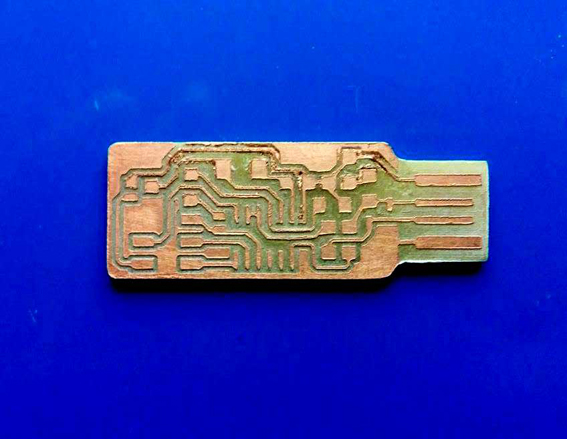

Electronics production
Version 2.3 FabISPkey
1 | pcb milling
For the electronics production home assignment, I decided to try fabricating the version 2.3 FabISPkey, based on the design of Andy
I downloaded the files in his page, the png version, in order to use the
Modela MDX 20 Roland milling machine and Fab Modules as CAM.

I previously downloaded the Fab Modules here
and installed them on Ubuntu operating system.
For the first phase of the Electronics production module, since the material supply of FR1 and electronics components for the FabISP wasn't available yet, I tried just to experimenting milling the pcb with the Modela MDX20, but using instead a piece of
that was available at my lab. I investigated about the toxicity of the board, and I discover that it's actually quite toxic but and I took care of milling the FR2 wearing a mask.


Before starting the milling procedure, I cut the FR2 board (20 x 20 cm) in subparts a bit bigger than the size of the pcb drew in the Andy's png file. Since the fabisp_cmp.png file was 45.932 x 18.627 mm, I prepared portions of FR2 2 cm higher and wider than.

Once cut the 20x20 cm board in subparts, I attached the first on the milling machine sacrificial layer with an average double-sided bonding tape.

As machine tool, I used a DIY burin (bulino) that in the largest section has a diameter of 6 mm (as Modela MDX 20 tools show). Since the burin is DIY and unprecise, I couldn't establish a precise measure for its tool peak, and I had to test and retry the fabmodules settings many times in order to get a rapport between tool diameter and engrave depht close to reality.

After some attempts with bad results (I set many times a 2D type path, setting that didn't allow me to set the miling depht, creating some bad effects on my fabrication), I found the right setting and generated a .rml file that provided an almost acceptable milling result on the board. Below the best settings I found for the traces.

I then substituted the milling cilyndrical tool with the o.4 mm original Roland one, and proceeded with the interior milling phase.


Below the fab module settings I used for the interior.

As a last step, I worked manually on the pcb to correct those traces that didn't came out in a proper and "clean" way. It occurred that in the "south" area of the board, the mill was less deep, and some traces weren't enough defined. In the same way, I found a couple of copper "bridges" that didn't have to be there and I removed them with a cutter. I think that the depth difference of the milling process on the pcb has been caused by the wrong type of double-sided bonding tape that I used to assure the FR2 board to the milling machine sacrificial layer. Indeed, I think it was to "squeezy" and thick than the suitable one for this kind of fabrication. In the image below, how it looks the right type of double-sided bonding tape: thin and not squeezy at all.

Finally, an overview of all my unsuccesful results, from both sides.